Qwen-CUA：面向几乎一切软件的原生计算机使用 Agent
《Qwen-CUA: Native Computer Use for (almost) Everything》由 Dunjie Lu 等作者完成，一作主机构为 Qwen Team，合作机构包括 XLang Lab。论文于 2026 年 8 月 3 日以 arXiv v1 技术报告公开，介绍一个基于 397B-A17B Qwen MoE 骨干的原生计算机使用 Agent：模型只接收屏幕截图，只输出键盘和鼠标事件，不依赖 DOM、可访问性元数据或任务专用 API。论文入口：arXiv:2608.02352。报告描述了浏览器内部部署和附录案例，但本轮未核验到独立公开代码仓库、可下载 checkpoint 或完整训练数据。
原生计算机使用不只是视觉定位问题：Agent 还要在部分可观测、机器不可读的 GUI 中维持长程状态，承担昂贵的交互采样，并从稀疏但可验证的终局结果学习；像素定位与早期动作错误会沿长工作流持续累积。
1. 背景和问题
大模型操作数字世界大致有三种接口：写代码、调用结构化 API、操作给人使用的图形界面。前两种接口已经能把对象、参数和错误显式暴露给模型，第三种接口却仍覆盖大量没有良好 API 的软件：传统桌面应用、动态网站、企业内部系统、CAD/Blender 等专业工具，以及依赖个人文件与账户状态的跨应用工作流。若模型能够像人一样从像素理解当前状态，再发出鼠标和键盘事件，它就获得一个跨软件可迁移的兜底接口；代价是环境不再主动告诉模型“这是按钮”“这个表格单元格已修改”，状态只能从连续截图和动作结果中推断。
这类任务首先是部分可观测的长程控制。一次点击可能没有生效，页面可能仍在加载，弹窗可能遮挡目标；如果 Agent 没有重新观察，就会把错误状态带到后续步骤。复杂任务还会跨越几十乃至数百轮，早期截图解释了为什么后来选择某个菜单，但把所有高清截图永久留在上下文又会迅速耗尽视觉 token 和 KV cache。简单滑动窗口虽然控制长度，却可能删除关键的历史因果链。Qwen-CUA 因而同时处理两个看似冲突的要求：最近界面必须保留像素细节，较早的推理和动作又不能全部消失，且每次请求最好共享稳定前缀以降低缓存重算。
第二个问题是交互经验昂贵且奖励稀疏。文本训练样本可以离线批量生成，GUI 轨迹却需要可启动、可重置、彼此隔离的有状态环境；每条轨迹还要等待真实界面响应。参考动作序列并不是可靠监督，因为完成同一目标常有多条合法路径。论文把监督锚定在最终环境状态：任务带有可复现初态和可执行 evaluator，允许 binary success，也允许按独立条件给 partial credit。这样做减少了对唯一“标准操作步骤”的依赖，但终局奖励无法直接回答“第 37 步为什么错”，长轨迹的 credit assignment 仍然困难。
第三个问题是训练分布与真实使用之间的落差。标准办公软件只覆盖一部分数字工作；个人桌面包含历史文件、偏好和账户状态，专业软件又要求领域知识。仅靠自动探索不容易发现稀有但合理的操作序列，仅靠人工演示则难以扩到数万任务。Qwen-CUA 把可控 mock web、沙箱桌面、可验证任务、模拟用户和个性化人工轨迹拼在一起：前者追求规模与状态验证，后者补充长程协作、错误恢复和专业流程。报告声称约 40,000 个可验证任务，并依靠接近 100,000 vCPU 的云资源与数万个并发环境持续产生 rollout。
最后，通用 GUI 接口并不自动等于安全或高效。屏幕中的网页内容可能夹带间接提示注入，点击“购买”“删除”“扩容”可能产生不可逆后果；而原生鼠标操作在文件批处理等任务上显著慢于 Bash 或 API。论文因此不只比较任务成功率，还测攻击成功率、输出 token、交互 turns、GUI 与 Bash 的混合效果，并展示浏览器内的用户确认点。这使它更像一份端到端系统报告：真正的研究对象不只是 397B-A17B 模型，还包括观察接口、上下文生命周期、任务与环境生成、在线 RL、部署安全和工具路由的联动设计。
从已有路线看，结构化 Web Agent 往往读取 DOM 或可访问性树，再在离散元素上规划；视觉 grounding 模型则学习把语言指令落到屏幕坐标；较新的 native agent 才把视觉理解、长程规划、坐标动作和结果验证统一到一个策略中。结构化状态便于定位与校验，却难以覆盖没有标准语义层的桌面或远程应用；纯视觉接口覆盖更广，却必须自己判断文本、布局、可交互区域和状态变化。Qwen-CUA 选择后者，不是因为 GUI 比 API 更高效，而是把它当成“任何人能看到并操作的软件，模型理论上也有入口”的最小公分母。这个选择决定后文的训练难点：模型不能借助隐藏对象 ID 纠正坐标误差，也不能从 API 返回值直接知道任务是否成功。
论文的另一个背景判断是，computer-use 能力不能只靠静态 screenshot grounding 数据长出来。单步点击数据主要训练“点哪里”，真实任务还要求“为什么现在点、失败后如何恢复、何时询问用户、如何确认最终状态”。如果训练只模仿成功轨迹，模型很少看到恢复路径；如果完全靠在线 RL，昂贵环境和稀疏奖励又使探索效率很低。因此作者把人工个性化演示、模型辅助 rationale、可验证任务和在线 rollout 组合起来，并在每轮训练后重新分析失败域。这个过程更接近不断更新的能力课程，而不是固定数据集上的一次微调，也解释了为什么实验曲线不能被当成纯模型 scaling 结论。
它与大模型研究的直接联系在于多模态长上下文、agentic post-training、MoE 稳定优化和工具调用；与推荐系统的交点则在个性化状态、长时用户偏好与决策执行。MyPCBench 的任务依赖连贯的个人文件、账户和历史，类似推荐系统中不能只看当前 query、还要维护长期用户状态；call user 动作对应主动澄清缺失偏好；按当前策略成功率筛选 RL 任务，又接近 capability-aware 的难例采样。不过这些迁移只能借鉴机制，不能直接把 GUI benchmark 分数解释成推荐效果：论文没有 CTR、排序、召回或在线用户价值实验，个性化能力只在计算机使用任务中验证。
2. 方法
2.1 原生视觉交互接口
Qwen-CUA 每一步接收自然语言任务、当前截图与折叠后的历史，由 scaffold 把模型输出解释成原生事件。动作空间覆盖 key、key down/up、type、mouse move、左/右/中键点击、双击/三击、拖拽、mouse down/up、纵向/横向滚动，也包含 screenshot、wait、terminate 和 call user 等控制动作。模型没有 DOM、accessibility tree、shell 或应用专用捷径；“按钮是否存在、点击是否成功”必须从新截图再次判断。这种限制提高了跨软件一致性，也把像素定位、状态确认和错误恢复全部压回策略本身。
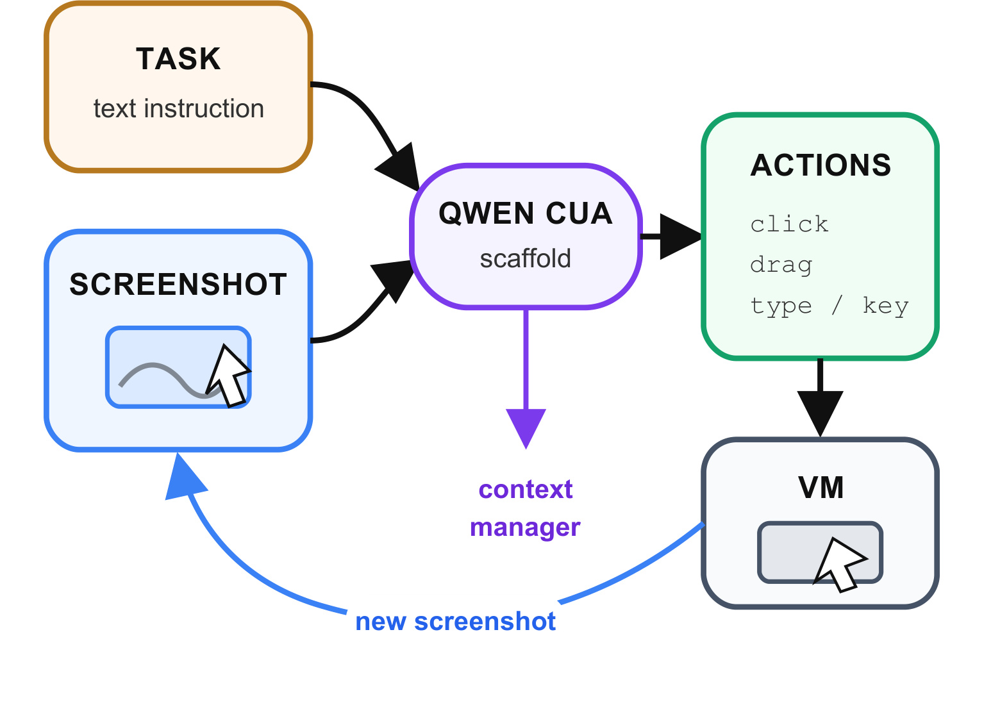
Figure 2 把任务文本和截图作为两条输入流送入 Qwen-CUA scaffold，右侧 action 经键盘/鼠标事件作用于 VM，环境再回传新截图，context manager 管理循环历史。图中最重要的不是动作列表有多丰富，而是信息边界：VM 的隐藏状态从未直接进入模型，Agent 只能通过执行后的屏幕差异闭环校验。训练时，推理与 tool-call token 是策略产生的序列，进入后续 SFT/RL 损失；任务、截图和环境回复只是条件。推理时不再计算训练目标，同一 schema 直接驱动环境。这个一致接口使 browser、Linux desktop、macOS 与专业软件能共享策略，但一动作一观察也会增加延迟，并让错误点击具有真实状态后果。
2.2 长程视觉上下文折叠
论文把活跃视觉历史提高到 20 张截图，并维护折叠前缀长度 $k$。设轨迹当前有 $T$ 张截图、图像预算 $B=20$、每次推进步长 $S=10$；只要 $T-k>B$，就令 $k\leftarrow k+S$。前 $k$ 张截图替换为固定文本占位符，相关推理和动作仍留在会话，最近截图保留原始视觉形式。这个算子不调用额外摘要模型，也不尝试把旧截图语义压缩为可能失真的自然语言。关键设计是边界每十步才变化一次：第 21 到第 30 步共享同一折叠前缀，避免每一步滑窗都重写 prompt，从而提高 KV-cache 复用。
符号解释：$T$ 是累计截图数，$k$ 是当前已折叠截图数，$B$ 是仍以像素保留的图像上限，$S$ 是块推进幅度，$k'$ 是本轮更新后的折叠边界。这个写法等价概括附录 Algorithm 1 的 while 循环；它保证 $T-k'\le B$，但不保证旧截图信息无损，因为占位符只保存“这里曾有图像”而不保存图中内容。早期视觉证据一旦折叠，模型只能依靠仍保留的文字推理和动作恢复上下文。
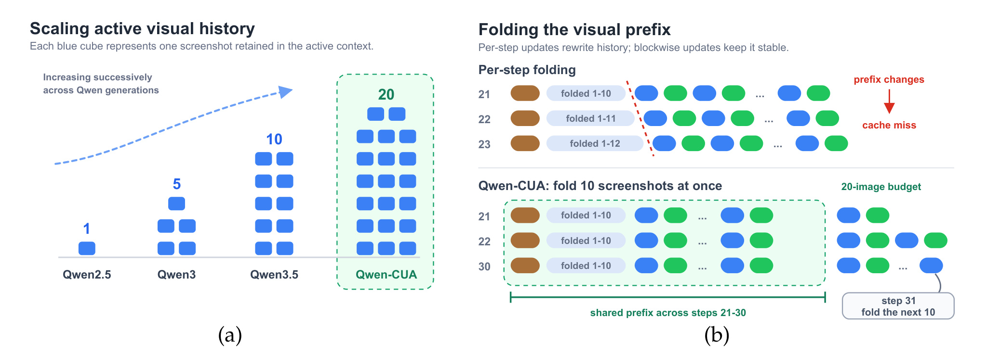
Figure 3 左侧展示 Qwen 系列活跃截图容量从 1、5、10 增到 20；右侧对比逐步折叠和 Qwen-CUA 的十图块折叠。逐步方案在第 21、22、23 步分别变成 folded 1-10、1-11、1-12，缓存前缀不断改变；块方案在第 21 至 30 步一直保持 folded 1-10，到第 31 步才整体推进。训练时同一 episode 每十个交互 turn-pair 产生一个 context-bounded slice，每个 slice 继承完整终局奖励，但只有当前 slice 内的策略 token 有 loss；推理则在线按 20 图预算推进。两者表示一致、调度不同：训练受 144K token 上限约束并枚举多个视图，推理受 20-image budget 约束逐步运行。
2.3 环境、任务与个性化轨迹的数据飞轮
训练资源被拆成相互补足的三层。第一层是可控环境：mock web 服务提供状态注入、检查、重置和 session isolation，桌面沙箱则覆盖日常、创意、科研、工程与长尾专业软件。第二层是约 40,000 个可验证任务，分为环境操作、需要向模拟用户澄清的信息不完备任务，以及通过 phase-state chaining 构造的长工作流；每个阶段完成后可以序列化状态，再作为下一阶段初态。第三层是个性化人工轨迹，标注员在带个人文件、历史与偏好的桌面中完成端到端任务，模型再依据先前轨迹、当前观察和已执行动作补全逐步 rationale，并过滤与状态或动作不一致的解释。
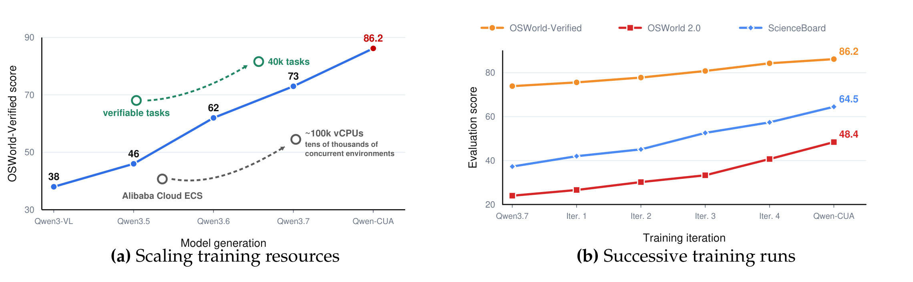
Figure 4 左图把 OSWorld-Verified 的代际得分与 Alibaba Cloud ECS、可验证任务、40K tasks、约 100K vCPU 和数万个并发环境并列，右图则画出 Qwen3.7 到四次迭代再到 Qwen-CUA 的 OSWorld-Verified、OSWorld 2.0 与 ScienceBoard 走势。它支持的结论是“能力提升与模型、任务、基础设施和迭代共同扩展同时发生”，并不是某一个变量的受控 scaling law。每轮都会更换教师演示、SFT mixture、弱领域数据和 RL 任务分布，因此曲线斜率不能被解释成单独增加数据量或 vCPU 的因果效应。部署推理也不携带这些 evaluator 和环境控制接口；它们是产生策略经验的训练基础设施，而非隐藏的在线工具。
2.4 RLVR、SAPO 与迭代训练
每个 RL 样本是 $(t,s,r)$：任务指令、可复现初态和检查终态的可执行奖励。当前 SFT 策略先对候选任务独立试跑 8 次，只保留成功次数既不为 0、也不为 8 的任务：
符号解释：$q$ 是候选任务，$c(q)$ 是 8 次 rollout 的成功次数，$Q_{\mathrm{RL}}$ 是下一轮进入在线优化的任务池。这个筛选剔除当前完全不可达和已经饱和的任务，把采样集中在有结果方差的“可学习前沿”；代价是困难但暂时全失败的任务不会直接贡献 RL 梯度，必须先由新的 SFT 演示或数据刷新降低难度。
每个被采样任务先生成 $N_{\mathrm{over}}=20$ 条候选轨迹，丢弃超时、tool-call malformed 或终态无效的轨迹，取前 $G=16$ 条有效轨迹组成一组。终局 evaluator 给出 $r_i\in[0,1]$，同一轨迹所有活跃 token 共享组内标准化优势：
符号解释：$r_i$ 是第 $i$ 条轨迹的终局奖励，$\bar r$ 与 $\sigma_r$ 是同组均值和标准差，$\delta>0$ 防止除零，$\hat A_i$ 是整条轨迹共享的优势。如果 16 条轨迹奖励完全相同，分子全部为零，该组不产生策略梯度；这避免无方差组制造伪信号，但仍没有解决轨迹内部哪个动作真正带来成败的细粒度归因。
SAPO 先计算当前策略相对行为策略的 token 级重要性比率，再用按优势正负选择温度的 logistic 门替代 PPO 式硬裁剪：
符号解释：$y_{i,u}$ 是轨迹 $i$ 的第 $u$ 个活跃 token，$h_{i,u}$ 是任务、历史与折叠后可见截图，$\pi_{\theta_{\mathrm{old}}}$ 负责采样，$\pi_\theta$ 是待更新策略。$\rho=1$ 表示 token 仍处于近 on-policy 区域。
符号解释：$\sigma(z)=1/(1+e^{-z})$，报告配置为 $\tau_{\mathrm{pos}}=1.0$、$\tau_{\mathrm{neg}}=1.05$。前置系数 $4/\tau$ 让 $\rho=1$ 处的斜率与未裁剪更新一致；$\tau_{\mathrm{neg}}$ 略大，使非正优势 token 偏离行为策略时更快衰减，因为降低某 token 概率会同时抬高许多替代 token，更容易破坏长多模态轨迹与 MoE 训练稳定性。
符号解释：$M_i$ 只包含模型生成的 reasoning 与 computer-use tool-call token，$|M_i|$ 对不同长度轨迹归一化；task、折叠前缀、截图、用户/模拟用户消息和环境回复都被 mask。梯度可写成 $w_{i,u}\rho_{i,u}\nabla_\theta\log\pi_\theta\hat A_i$ 的加权和，其中：
符号解释：$w_{i,u}$ 是有效梯度权重；当 $\rho=1$ 时 $p=1/2$、$w=1$，偏离行为策略后权重平滑趋近 0，因此 SAPO 表现为 soft trust region。训练把完整 episode 切成多个折叠历史视图、复用同一终局奖励，只对各 slice 的活跃策略 token 反传；推理只执行训练后的策略和同一折叠算子，不计算 $\hat A$、$\rho$ 或 $w$。
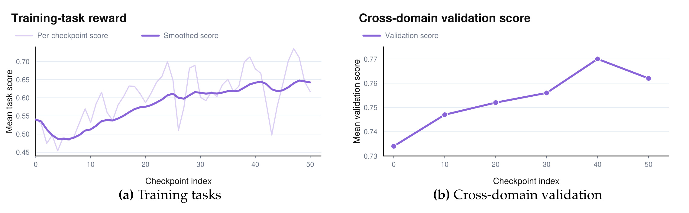
Figure 5 左图显示在线训练 batch 混合异质任务和随机轨迹，单 checkpoint 奖励波动很大，但平滑曲线从早期约 0.49 恢复并升到约 0.64；右图的过滤跨域验证从 RL 前 0.734 上升，在 checkpoint 40（update 800）达到 0.770，之后 checkpoint 50 回落到 0.762，因此作者选 40 用于后续评测。每个 checkpoint 相隔 20 个 outer-batch updates。迭代层面又会用当前模型的失败查询刷新教师演示、人工轨迹和弱领域数据，并从同一 mid-training checkpoint 重新做 SFT，而不是连续微调上一轮 Agent；改善通过数据迁移，减少优化漂移继承。
3. 实验结果
3.1 八项基准的总体能力版图
主评测统一采用 screenshot-only、keyboard-and-mouse-only 协议，不给 DOM、accessibility tree、shell 或任务 API。八项任务分别覆盖日常桌面（OSWorld-Verified）、严格长程与 partial progress（OSWorld 2.0）、个性化跨应用历史（MyPCBench）、真实 macOS（MacAgentBench）、97 个可运行软件环境（Gym-Anything）、科研软件（ScienceBoard）、真实网站工作流（WebArena）和间接提示注入（RedTeamCUA）。这种跨度能检查通用性，但不同 benchmark 的任务版本、step limit、评分器和模型接口并不统一，跨列比较必须以各自口径为准。
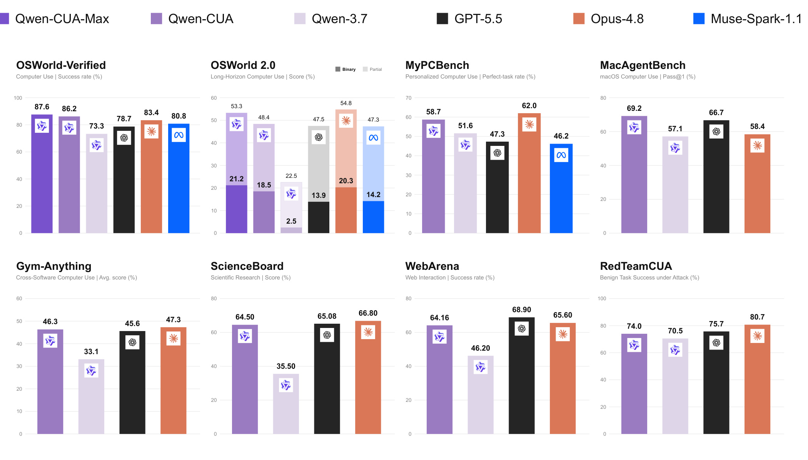
Figure 1 显示 Qwen-CUA 在 OSWorld-Verified 达到 86.2，低于放大容量的 Qwen-CUA-Max 87.6，却高于 Qwen3.7 的 73.3、GPT-5.5 的 78.7 和 Opus-4.8 的 83.4；OSWorld 2.0 则是 18.5 binary、48.4 partial，仍低于 Opus-4.8 的 20.3/54.8。MyPCBench 上 58.7 低于 Opus-4.8 的 62.0，ScienceBoard 的 64.50 也略低于 GPT-5.5 65.08 与 Opus-4.8 66.80；WebArena 64.16 落后 GPT-5.5 68.90。图支持“全面超过 Qwen3.7”，但不支持“全面超过所有专有系统”。强项集中在 OSWorld-Verified 和 MacAgentBench，长程严格完成与科研/Web 场景仍有差距。
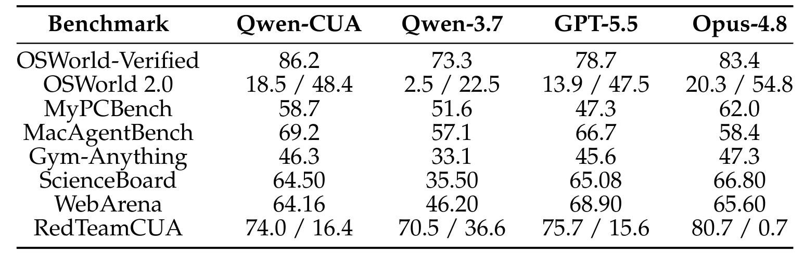
Table 1 将图中的精确数值放在同一矩阵：Qwen-CUA 相对 Qwen3.7 在八项 capability 指标上都更高，OSWorld 2.0 binary 从 2.5 到 18.5、partial 从 22.5 到 48.4，ScienceBoard 从 35.50 到 64.50，Gym-Anything 从 33.1 到 46.3，提升并非只来自一个桌面套件。另一方面，RedTeamCUA 单元格是 task success/ASR，第二个数字越低越好，不能按“全部越高越好”读；OSWorld 2.0 也同时报告严格完成与部分进度。OSWorld-Verified 的 360 任务中生成了 359 条完整记录，总分仍按 360 任务为分母；MyPCBench 总体 rubric score 为 84.3、perfect-task rate 为 58.7，主表只展示后者。
附录细分也帮助判断这些总分是否被单一应用驱动。OSWorld-Verified 中，Qwen-CUA 在 Chrome、GIMP、Calc、Impress、Writer、Multi-apps、OS、Thunderbird、VLC 和 VS Code 十个域的得分率分别处于 77.9% 至 93.3% 区间，Multi-apps 最低；这与长链跨应用仍困难的判断一致。MacAgentBench 共 676 个任务，Multimedia 81.0% 最高，Multi-App 58.6% 最低；12 个 clock tasks 被官方 evaluator 判零分，作者虽人工观察到似乎完成，仍保留官方得分。ScienceBoard 在六个专业科研应用上完成 109/169 个任务，Qwen-CUA 64.50 与 GPT-5.5 65.08、Opus-4.8 66.80 接近，但不存在显著领先证据。
Gym-Anything 的 46.3 也要结合覆盖读。主比较来自 97 个可运行环境、1,295 个任务的 strict-clean 结果，Opus-4.8 为 47.3、GPT-5.5 为 45.6；另有 100 个环境未进入完成运行，包括需要 Windows/Android 镜像和 Linux setup 失败的环境。所谓“跨 200 多应用”并不等于本次评测全部覆盖。WebArena 64.16 低于两个专有系统，说明在功能网站上 screenshot-only 的通用性仍未转化为稳定领先。这些附录证据让“八项都超过 Qwen3.7”保持成立，同时把外推边界限定在实际执行且清洗后的环境集合。
3.2 效率：Token 不冗长，但动作仍然昂贵
论文把效率拆成两轴。Token efficiency 影响推理成本和延迟；interaction efficiency 衡量推进环境需要多少轮，但高度依赖接口一次能否打包多个低级动作。OSWorld-Verified 上 Qwen-CUA 以平均 3,605.8 output tokens/task 达到 86.2；Opus-4.8 在相近 token 预算约 80.0，放到 21.8K token 才到 83.3。这个对比至少排除了“Qwen-CUA 只是输出更长 reasoning 才得高分”的简单解释。
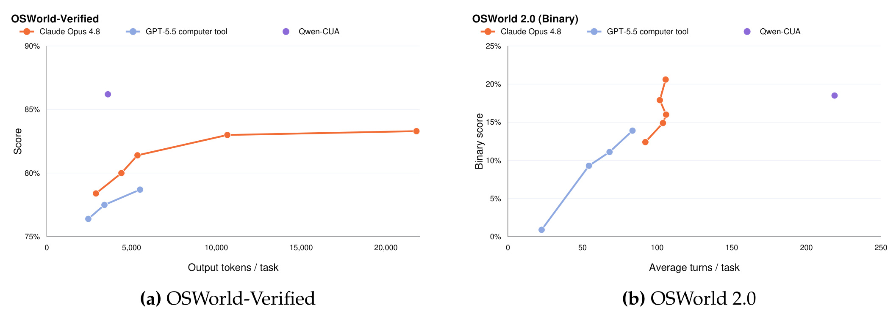
Figure 6 左图把 OSWorld-Verified score 对 output tokens/task 作图，Qwen-CUA 的点位于较高得分、约 3.6K token 处；右图把 OSWorld 2.0 binary score 对 average turns/task 作图，Qwen-CUA 约 218.9 turns，明显高于 GPT-5.5 的 83.5 和 Opus-4.8 的 105.7。作者主动说明 Qwen-CUA 每 turn 只发一个 native action，而两个专有接口可在一轮发多个动作，所以右图混合了真实轨迹长度与动作打包差异。附录还报告 Qwen-CUA 在 OSWorld 2.0 平均 248.2 executed actions、244,625.5 output tokens/task；严格长任务的成本仍很高，不能用左图的 token 效率概括所有场景。
3.3 安全：间接提示注入风险下降但未消失
RedTeamCUA 在 ownCloud、Rocket.Chat 和 Reddit 的混合 web-OS 工作流中嵌入不可信屏幕指令，同时报告 benign task success 和 attack success rate（ASR）。联合指标很重要：一个从不执行任务的模型可能得到低 ASR，却不是有用的安全 Agent。Qwen-CUA 相对 Qwen3.7 把总体 task success 从 70.5 提到 74.0，同时将 ASR 从 36.6 降到 16.4，下降 20.2 个百分点，说明改进不是简单靠全面拒绝。
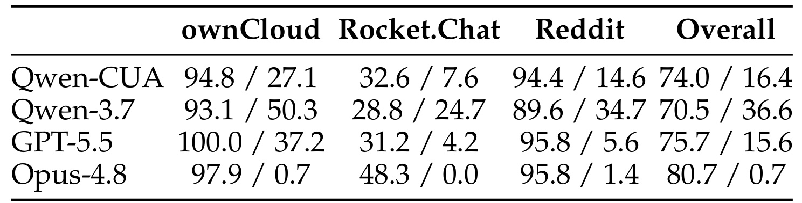
Table 2 显示 ASR 在 ownCloud 从 50.3 降到 27.1、Rocket.Chat 从 24.7 降到 7.6、Reddit 从 34.7 降到 14.6，三个平台方向一致；但 Qwen-CUA 总体 74.0/16.4 仅接近 GPT-5.5 的 75.7/15.6，Opus-4.8 仍以 80.7/0.7 明显领先。Rocket.Chat 的任务成功率只有 32.6，因此该平台低 ASR 必须和执行失败一起理解。表中还显示 Qwen-CUA 在 ownCloud 与 Reddit 的 benign task success 都超过 94%，而风险没有同步归零，说明高任务能力和抗注入不是同一维度。剩余 16.4% ASR 仍足以让原生控制 Agent 在真实桌面造成高后果操作，基准改善不能替代权限隔离、确认门、审计与可撤销执行。
3.4 浏览器部署与高风险动作确认
作者开发了内部 Chrome 扩展，将 Agent 放在 side panel 中，以截图和原生鼠标/键盘操作当前页面，同时向用户暴露轨迹。这个部署能遇到基准较少覆盖的动态页面、陌生布局、失败点击恢复和用户介入，但报告没有给出外部用户规模、线上 A/B、长期错误率或独立安全审核，因此它应被视为真实形态原型，而不是公开生产成熟度证明。
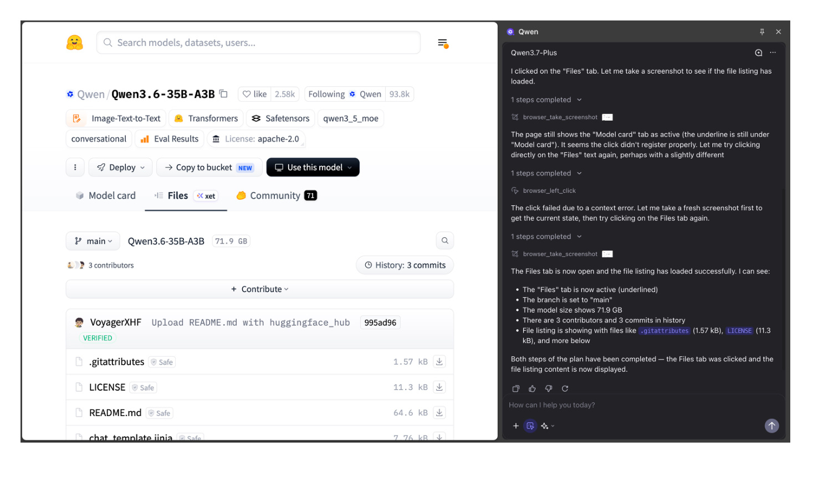
Figure 7 左侧是活动网页，右侧是 Qwen 轨迹。示例中第一次点击 Files 没有生效，模型请求新截图、判断页签仍未切换，再次点击并确认文件列表出现。这段界面证据体现 screenshot-only 策略的重要闭环：动作成功不能由“我已经点击”自证，必须在下一观察中验证。side panel 也让用户看到行动和恢复过程，为审计提供入口；但轨迹可见不等于用户能及时阻止所有危险动作，真正的安全性取决于哪些操作被分类为 consequential、确认是否强制以及权限是否最小化。截图只证明扩展能承载这种交互，不提供恢复成功率、页面覆盖率或长期稳定性统计；因此它支撑“可部署形态存在”，不支撑“产品已广泛可靠运行”。
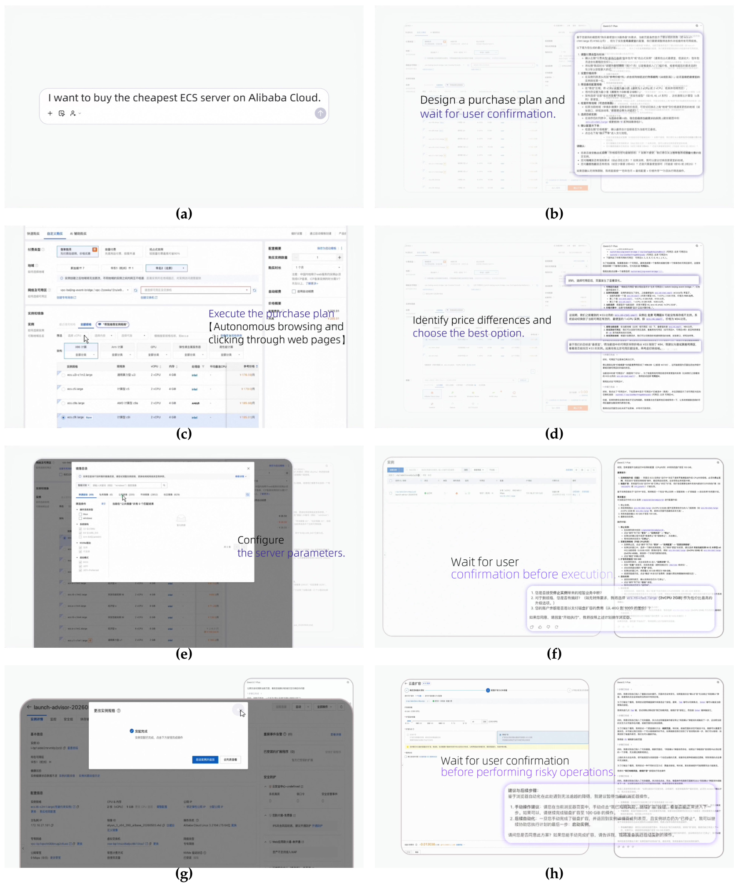
Figure 10 把一个“购买最便宜 ECS”请求分成八帧：先生成购买计划并等待用户确认，再自动浏览、比较价格、选规格和配置；应用配置前再次确认，完成后在磁盘扩容这类风险操作前暂停。它表明确认门不是每个点击都触发，而是放在提交、费用与潜在破坏性边界上，这比持续弹窗更可用。图中确认内容还包含拟执行计划或参数，而不只是模糊的“是否继续”，这有助于用户理解承诺对象。第 (g) 帧展示规格修改已经完成，第 (h) 帧又在新的风险边界暂停，说明一次授权没有被无限延续到后续动作。证据仍是单一编辑案例：没有展示用户拒绝、价格突变、页面被注入错误指令、确认后状态漂移或操作回滚。若要成为安全机制，还需把“风险动作识别—确认内容—执行对象—执行后校验”绑定成可机器审计的事务，而不只是自然语言询问。
3.5 GUI 与 Bash 的混合工具权衡
原生 GUI 提供几乎覆盖所有软件的通用接口，文件与系统操作却常能用 Bash 更短、更精确地完成。论文在同一 MyPCBench 任务上比较 computer use only 与 computer use + Bash，让模型自行路由两类工具。理想结果应是 turns 下降且成功率不损失；现实结果显示当前策略还不会稳定选择何时切换。
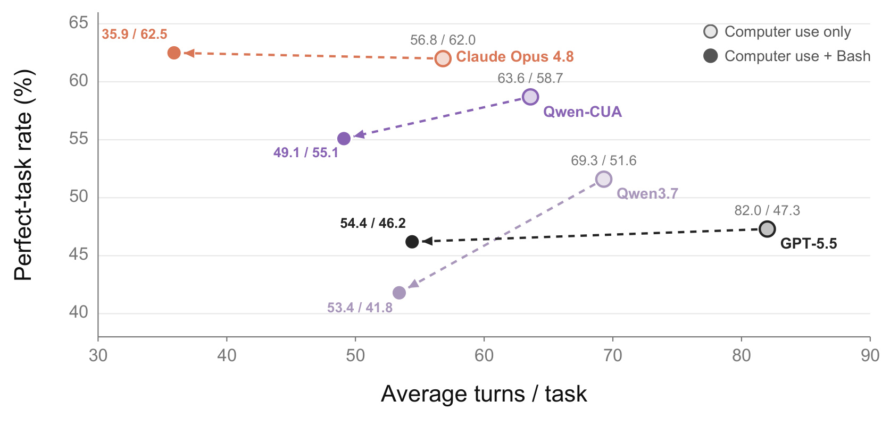
Figure 8 中 Qwen-CUA 从纯 GUI 的 63.6 turns/58.7 perfect-task rate，变成加 Bash 后 49.1 turns/55.1；轨迹缩短约 22.8%，成功率却下降 3.6 个百分点。Qwen3.7 从 69.3/51.6 变为 53.4/41.8，能力损失更大。Opus-4.8 和 GPT-5.5 也沿类似方向移动。图支持“Bash 能缩短合适操作路径”，不支持“给 Agent 加 shell 就同时更快更强”。所有模型的箭头都向左但没有稳定向上，说明当前混合接口主要换来成本下降，而非支配纯 GUI 的新前沿。失败可能来自不必要切换、GUI 与 shell 状态不同步、命令生成错误或路由监督不足；后续训练应直接优化工具选择与跨接口状态一致性，而不是只把 Bash 加进动作集合。
3.6 模型容量扩展与可比性边界
Qwen-CUA 主模型是 397B 总参数、17B 激活参数的 MoE。作者把相同原生接口和 agentic training recipe 扩展到总参数超过 1T 的 Qwen-CUA-Max，并在 OSWorld-Verified 与 OSWorld 2.0 上复测。这个实验回答“配方在更大容量上是否仍有收益”，并未提供等 FLOPs、等激活参数、等数据或多随机种子的受控消融。
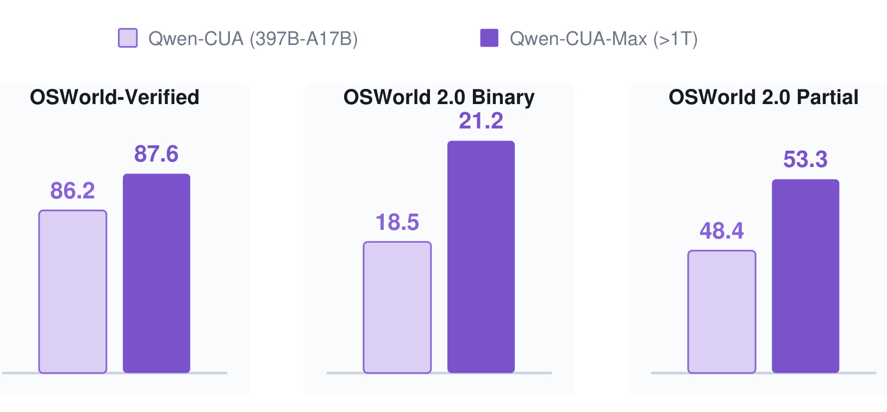
Figure 9 显示 OSWorld-Verified 从 86.2 增至 87.6，提升 1.4 点；OSWorld 2.0 binary 从 18.5 到 21.2，提升 2.7 点；partial 从 48.4 到 53.3，提升 4.9 点。较难长程任务的 partial gain 最大，说明更大容量可能改善中间进展，即使严格终局成功提升有限。三组柱都上升，至少没有看到配方在 >1T 规模失效；但提升幅度不均，不能用一个统一比例概括。尤其 partial gain 大于 binary gain，可能意味着更多任务推进得更远，却仍未跨过严格完成条件。只有两个规模点，且报告未给出 Qwen-CUA-Max 的激活参数、训练成本和完整八基准结果，不能建立可靠 scaling law；收益也可能与额外算力、数据筛选或训练细节共同相关。
3.7 训练成本、系统规模与复现门槛
397B-A17B 的 RL 使用 512 张 NVIDIA H200 SXM、64 个八卡节点，32 节点训练、32 节点 rollout。训练侧 TP=2、EP=8、CP=4、PP=8；rollout 侧 TP=8、数据并行、SGLang 与优化 attention backend。异步 dispatch ratio 为 2.35，policy-version skew 最多四个 optimizer steps。完整 1,000 updates 约五天，即约 61,440 H200 GPU-hours；环境侧同时维持最多 2,000 个实例，平均利用率超过 75%。
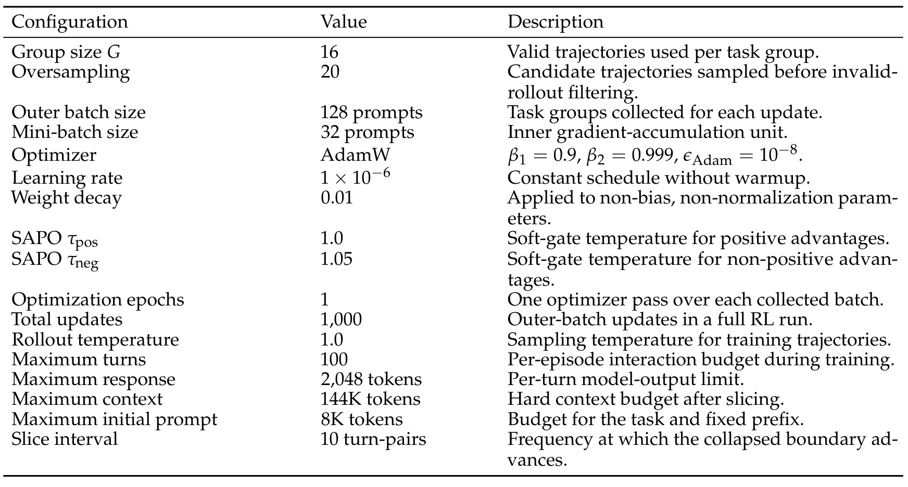
Table 3 给出 $G=16$、oversampling 20、outer batch 128 prompts、mini-batch 32、AdamW、学习率 $10^{-6}$、weight decay 0.01、单 epoch、1,000 updates、每 episode 100 turns、每 turn 2,048 response tokens、144K context 和每 10 turn-pairs 切片。一次 outer batch 在切片前最多有 $128\times16=2,048$ 条有效轨迹，切片后优化样本更多。复现难点不只在 512 张 H200：还要复制约 40K 可验证任务、可靠 evaluator、可重置软件镜像、个性化轨迹与并发环境调度。算法公式公开并不等于实验可复现，尤其报告未验证公开 checkpoint、数据和完整环境资产。
附录也暴露了评测覆盖风险。Gym-Anything 完成 97 个环境、1,295 个测试任务，却另有 100 个环境未进入完成运行：22 个需要 Windows VM、7 个需要 Android/AVD、71 个 Linux 环境因设置不完整或失败而缺失；导出的具名环境只有 96 行，与“已运行 97 个环境”仍差一行。MacAgentBench 的 12 个 clock tasks 被官方 evaluator 计零分，人工检查却认为交互似乎完成，作者仍保留官方 69.2 总分。这些处理较透明，但也说明 benchmark 分数同时测模型、环境可用性和 verifier 可靠性。
4. 总结
4.1 我的判断
Qwen-CUA 最有价值之处不是某个单项榜首，而是把原生 computer-use 的完整链路公开到可讨论的粒度：像素与原生事件的最小接口、20 图与十步块折叠、环境/任务/人工轨迹三类数据、终局 RLVR、SAPO 软门、迭代数据刷新、安全与混合工具评测。八基准全面超过 Qwen3.7，说明训练配方具有较强的一致收益；但相对专有系统仍是有胜有负，OSWorld 2.0 的严格完成率、RedTeamCUA 剩余 ASR 和高交互成本表明“几乎一切软件”更接近覆盖范围宣言，而不是可靠性承诺。
对推荐系统工程，最可迁移的是三点。其一，块折叠揭示长期会话不只要压缩信息，还要维护稳定 prefix 与缓存复用；个性化 Agent/推荐对话可把“近期高保真、远期结构化状态”与 serving cache 一起设计。其二，按当前能力筛选 $0<c(q)<8$ 的 RL 任务类似在线难例采样，但必须另保探索预算，避免冷门用户或困难任务永久被排除。其三，GUI/Bash 结果说明多工具系统的瓶颈常在路由，而非单工具能力；召回、排序、RAG 和执行工具之间也需要显式训练“何时切换”和状态一致性。
4.2 局限与后续跟进
主要局限至少包括：
- 复现成本极高。 512 张 H200、约 61,440 GPU-hours、近 100K vCPU 访问和数千并发环境超出多数团队能力，且本轮未核验公开 checkpoint、训练任务与完整环境资产。
- 终局奖励仍是粗粒度 credit。 切片让早中晚 token 都能收到梯度，却没有识别具体错误动作；共享奖励可能强化成功轨迹中的偶然或冗余步骤。
- 安全尚未闭环。 RedTeamCUA ASR 降到 16.4 仍非低风险，单一 Chrome 案例不能覆盖拒绝、撤销、状态漂移、权限升级与恶意确认界面。
- 效率口径受接口影响。 单动作/多动作每 turn 的差异使模型间 interaction efficiency 不完全可比；纯 GUI 在可程序化任务上仍有固有延迟。
- 评测环境不完整。 Gym-Anything 有大量缺失环境和一行导出差异，MacAgentBench 也存在 evaluator 异常，分数包含基础设施噪声。
- 容量结论只有两个点。 Qwen-CUA-Max 的收益缺少等算力、多种子和完整八基准对照，不能独立归因于总参数规模。
后续值得优先跟进：
- 复现 20-image、10-step folding 的 cache 命中率、首 token 延迟与任务成功率三方曲线，并与逐步滑窗、视觉摘要和可检索记忆做等预算比较；这能判断块折叠收益究竟来自信息保留还是 prefix 稳定。
- 在混合 GUI+Bash 设置中加入显式路由标签、执行前状态检查与执行后屏幕校验，分别统计工具选择错误和工具执行错误；如果成功率恢复而 turns 保持下降，才证明 hybrid agent 的能力—效率前沿真正外移。
- 将 RedTeamCUA 扩展为带权限沙箱、强制确认、可撤销事务和攻击后审计的系统评测，同时报告误拒绝与高后果动作漏拦截；单看 ASR 无法覆盖部署安全。
- 追踪是否公开独立代码仓库、checkpoint、任务/evaluator 与 Qwen-CUA-Max 训练细节，并优先核验 OSWorld 2.0、Gym-Anything 的环境版本和可比设置；这些资产决定结果能否从技术报告变成可重复研究。
总体看，论文给出的最稳健结论是：原生视觉操作可以成为通用 Agent 的覆盖层，但它需要可验证交互规模、长程状态管理和安全确认共同支撑；在代码、shell 或 API 更合适时，GUI 应是统一 grounding 与 fallback，而不是唯一执行通道。
如果只选一个最值得复验的切入点，我会优先做上下文折叠与混合工具路由：前者关系到长会话 serving 成本，后者决定通用覆盖是否能与程序化效率共存。两者都能在远小于原论文训练规模的受控环境中验证，也最容易暴露“任务得分提高”背后的真实系统代价。